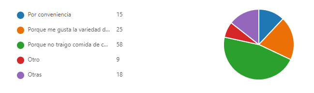
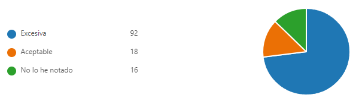
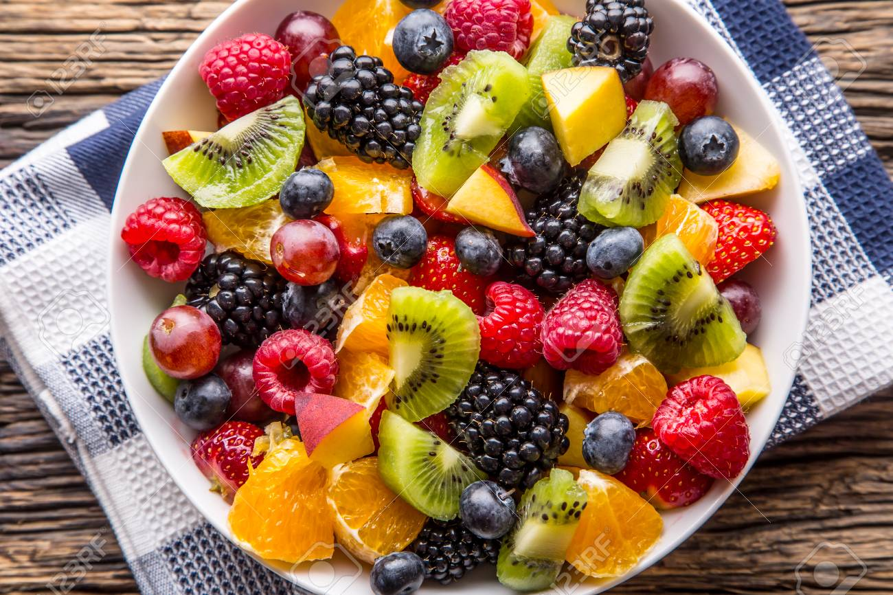
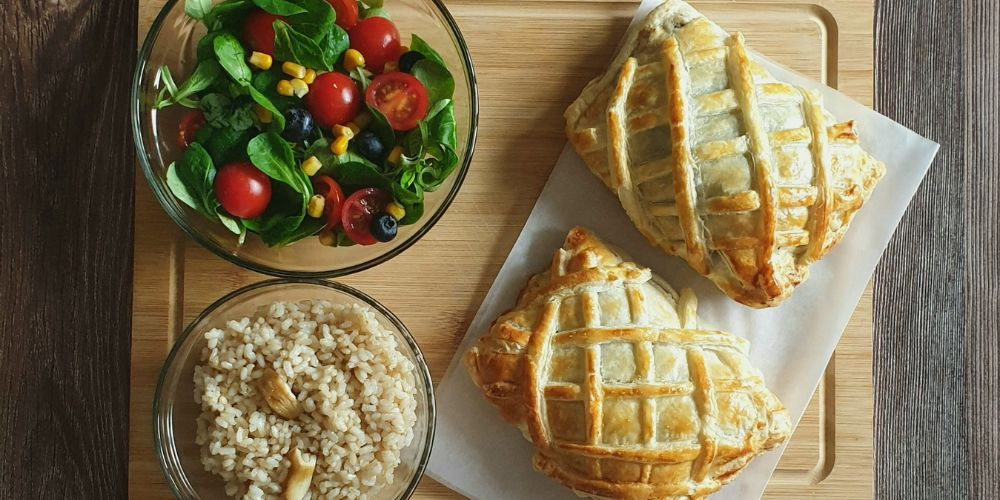

Conciencia Ecológica y Alimentación Saludable en la Escuela
Introducción
Bienvenido a nuestra página sobre conciencia ecológica y alimentación saludable. Aprende como puedes reducir la generacion de basura y como tener una buena alimentacion para poder tener una vida saludable.
En esta pagina te mostraremos la cantidad de basura que se genera cada dia, consejos para un consumo amigable para el medio ambiente asi como algunas recetas que te ayudaran a mejorar tu salud.
Estadísticas
Conoceras el por que los alumnos consumen alimentos en la escuela y su impacto en el ambiente con los reciduos de basura que producen.


Con los datos que se juntaron se puede observar que la mayoria de jovenes consume alimentos fuera de la escuela ya que no llevan comida de casa de esta forma el consumo de productos aumenta asi como la cantidad de basura producida por esto se recokmienda que los jovenes tengan mas conciencia y lleven su propio alimento para evitar la produccion de basura , ya que los resultados a la cantidad de basura que se produce son exsesivos por lo que hay que evitar producir basura de mas.
A continuacion se muestra la encuesta que se realizo :
Descubre los beneficios de una alimentación saludable y cómo puede mejorar tu vida y el medio ambiente. Agregar un link a un juego o pagina que permita hacer conciencia sobre alimentación
La nutrición es muy importante para la calidad de vida de las personas, siendo tres los pilares que ayudan a mantener una buena salud: el descanso, la alimentación y el ejercicio. La estrategia radica en aprender a equilibrar estas tres funciones. Una alimentación saludable implica consumir diferentes grupos de alimentos en cada comida para lograr un aporte equilibrado de nutrientes y proteína
BENEFICIOS DE UNA ALIMENTACIÓN SALUDABLE
. Mantenerte fuerte
. Protege el sistema inmunitario.
. Mantiene sana la piel, los dientes y los ojos.
. Previene la osteoporosis.
. Regula el tránsito intestinal
. Reduce el riesgo de padecer enfermedades cardiovasculares a largo plazo.
. Reduce el estrés
. Reduce el deterioro de la memoria y otras funciones cerebrales
. Mejora el estado de ánimo
. Combate el cansancio y la fatiga crónica
. Retrasa el proceso de envejecimiento
. Fortalece los huesos
. Mejora el funcionamiento del sistema digestivo
TIPS Y RECOMENDACIONES
Para cumplir con un correcto esquema de alimentación, es necesario es necesario consumir las cuatro comidas recomedadas durante el día: desayuno, almuerzo, merienda y cena.
El desayuno es la comida más importante del día, por lo que tiene que ser la más nutritiva posible (proteínas y fibras naturales). El almuerzo, se puede optar por alimentos bajos en grasas saturadas y que contengan grasas omegas 3 (por ejemplo, las nueces). También hay que reemplazar la comida de media mañana, como galletitas, chocolates, papas fritas, etc., preferiblemente por frutas frescas.
El cambio se nota cuando comenzamos a modificar lo que comemos, eligiendo alimentos saludables y dando prioridad a los productos frescos y no a los procesados.
La mayor parte de alimentos consumidos durante el día deben ser frutas, verduras y hortalizas que son las que nos van a proporcionar gran parte de las vitaminas, minerales y fibra, nutrientes fundamentales para el normal desarrollo del organismo. De igual forma no se puede dejar de lado el consumo de carne, pollo y pescado que nos aportan la proteína requerida para mantener sana la parte muscular de nuestro cuerpo.
El consumo de fibras es muy importante para regular el tránsito intestinal y brindar la sensación de saciedad, lo cual ayudará a no consumir más calorías.
En este proceso el agua debe ser la bebida principal, dejando de lado las bebidas no dietéticas y el alcohol. Se recomiendan 2 litros de agua por día.
Consejos Para Reducir La Basura
La minimización de residuos significa menos contaminación y más beneficios para el medio ambiente y la salud de todos, por lo que te dejamos una de las formas mas sencillas para ayudar al medio ambiente
Reduccion de basura con las tres R
Reducir:
disminuir el volumen de productos que consumimos. Debemos evitar comprar cosas innecesarias sólo por el afán de comprar
Para fabricar lo que compramos se precisan materias primas (petróleo, madera o agua) que, por su difícil extracción o por su escasez en la naturaleza, no podemos permitirnos el lujo de derrochar
Igual de preocupante es la enorme cantidad de basura que generan los envoltorios y envases de muchas de las cosas que compramos en nuestra vida cotidiana
Reciclar:
fabricar nuevos productos utilizando materiales obtenidos de otros usados, mediante un proceso de transformación
El papel, el cartón y los envases de vidrio, metal y plástico pueden reciclarse sin problema. Para ello es muy importante separar cada residuo en los diferentes contenedores que tenemos en las calles de nuestra ciudad
Reutilizar:
usar de nuevo un objeto que ya ha sido utilizado, ya sea para el mismo fin para el que fue creado o para otro distinto. De este modo alargamos su vida y evitamos que se convierta en basura
Cuantos más objetos volvamos a utilizar menos basura produciremos y menos recursos tendremos que gastar en fabricar otros nuevos
A continuacion te dejamos un videa que te puede ayudar a comprender mejor las 3R
Preparación: Corta todas las frutas en trozos pequeños
mézclalas en un tazón grande y añade yogur natural al gusto.
¡Disfruta de una merienda saludable y deliciosa!

Hojaldre de salmón con espinacas
Ingredientes:
500 g lomos de salmón
300 g espinacas frescas
2 tarrinas de queso batido
60 g nueces picadas
½ cebolla
2 láminas de hojaldre
2 cucharadas de aceite de oliva
1 huevo
Ralladura de limón
Sal
Pimienta500 g lomos de salmón
300 g espinacas frescas
2 tarrinas de queso batido
60 g nueces picadas
½ cebolla
2 láminas de hojaldre
2 cucharadas de aceite de oliva
1 huevo
Ralladura de limón
Sal
Pimienta
Preparacion:En una sartén ancha, con en aceite caliente, pochamos la cebolla cortada en juliana. Cuando esté dorada, añadimos las espinacas y un poco de sal y salteamos hasta que reduzcan su volumen, entonces apagamos el fuego y añadimos el yogur batido (también se puede hacer con nata o leche evaporada) y ligamos bien la salsa.
Añadimos las nueces picadas y mezclamos.
Mientras se enfría la salsa, secamos los lomos de salmón con papel absorbente, retiramos la piel y salpimentamos por los dos lados.
Añadimos también un poco de ralladura de limón.
Estiramos la lámina de hojaldre y cortamos según el tamaño de los lomos, para hacer paquetes.
Colocamos sobre el hojaldre una cucharada de salsa, encima el lomo de salmón y otro poco de salsa y cerramos bien, envolviendo todo el salmón con las espinacas y sellando con un tenedor en los bordes.
Si te sobra hojaldre, puedes cortar unas tiras finas y decorar la superficie.
Colocamos sobre papel de horno en la bandeja y ponemos a precalentar el horno a 180°C. Mientras, con el huevo batido, pintamos la superficie de los paquetitos de salmón.
Horneamos durante 20-30min, hasta que quede dorado. El tiempo puede ser menor o mayor en función del tamaño de los lomos de salmón.

ENSALADA DE PAVO
Ingredientes:
150 g de hojas de lechugas variadas
1 bote de mazorcas pequeñas de maíz
30 g de rúcula
250 g de pechuga de pavo
200 g de queso de bola
3 tomates
1 yogur
1 ramita de orégano fresco
Aceite de oliva
2 cucharadas de vinagre
Pimienta
Sal
Preparacion:Paso 1. Lava el pavo, sécalo y dóralo 4 minutos por cada lado en una plancha caliente con unas gotas de aceite.
Paso 2. Añade sal y pimienta y luego corta en lonchas finas. Reserva el pavo para luego al finalizar añadir a la ensalada.
Paso 3. Lava el orégano, sécalo y pícalo. Prepara una vinagreta batiendo el yogur, el orégano, 2 cucharadas de aceite y una pizca de sal y pimienta. Lava, seca y trocea los tomates.
Paso 4. Reparte las hojas de lechuga en el plato, coloca encima las pechugas de pavo, el queso cortado, las mazorcas mini, la rúcula lavada y los tomates troceados. Aliña con la salsa y listo.